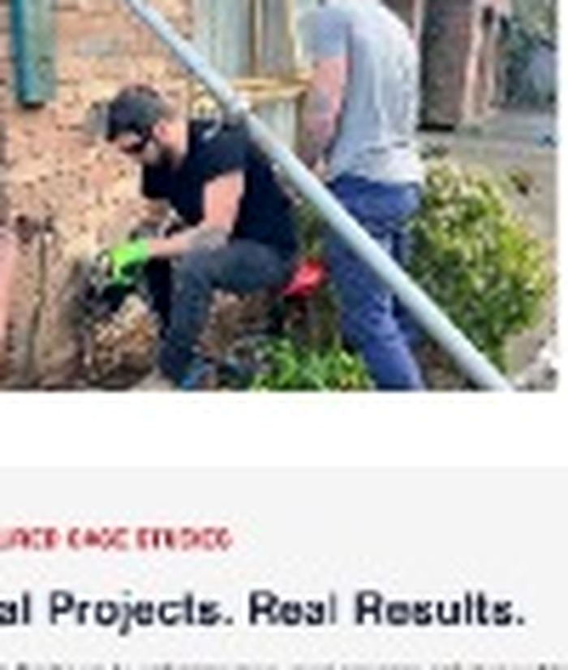

Sand permeation grouting & non-cohesive soil control
Stabilise running sands, control groundwater, and prevent excavation failure — safely and with minimal disruption.
Non-cohesive soils (sands and some gravels) lose the natural "bond" that holds excavation sides together. Permeation grouting fills voids and increases soil stiffness so trenches, pits and excavations can be formed and worked safely.

Why non-cohesive soils create risk
No cohesion
Loose sands can't bridge or retain shape — they run and collapse.
High Permeability
Water flows through sands, eroding support and washing fines.
Load Transfer
Loads cannot be transferred through loose soils without treatment.
Service Influence
Nearby utilities and traffic can destabilise excavations in sandy soils.
How Sand-Permeation Works
Ground Model & Feasibility
Assess whether the soil is permeable and whether permeation grouting is appropriate.
Bench Treatability & Grout Selection
Test grouts and select mix to penetrate sands and bond particles.
Injection Grid & Pilot Calibration
Establish grid and trial injections to calibrate spread and quantity.
Primary Permeation Pass
Inject grout under controlled pressures to fill inter-particle voids.
Secondary Closure & Water Cut-Off
Apply secondary treatments to seal preferential paths and cut off flows.
Verification & Construction Integration
Validate treatment with tests and integrate with construction sequencing.
Benefits
Stable Excavation
Reduced collapse risk and safer working conditions.
Controlled Inflows
Reduce groundwater inflows and dewatering needs.
Improved Bearing Capacity
Higher load-bearing capacity for foundations and slabs.
Non-destructive Delivery
Minimal disruption and retained access for site operations.
Why Choose Rectify
Proven Techniques, Experienced Team
Established methods in varied soils, supported by experienced operators.
Low-impact Delivery
Small footprint options and staged work to minimise disruption.
Engineering Assurance
Designs backed by engineers and QA testing during works.
Ready to Stabilise Sands and Control Mobilisation?
We'll assess your ground conditions, design the right mix of permeation/compaction/resin solutions, and coordinate any water management needed to keep works safe and on schedule.